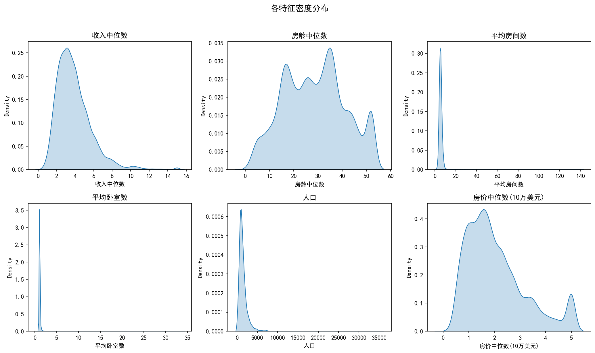
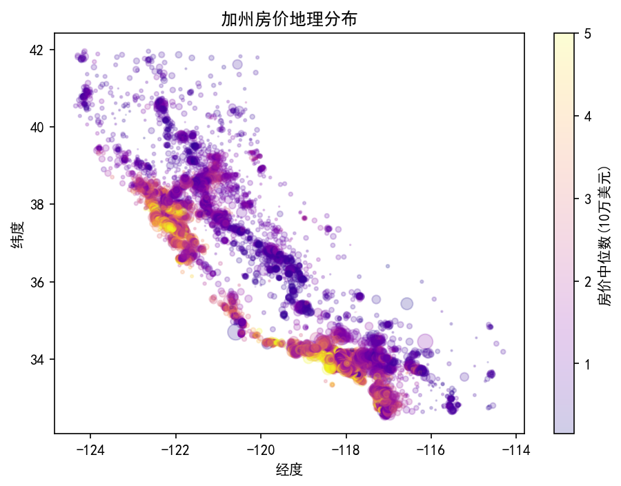
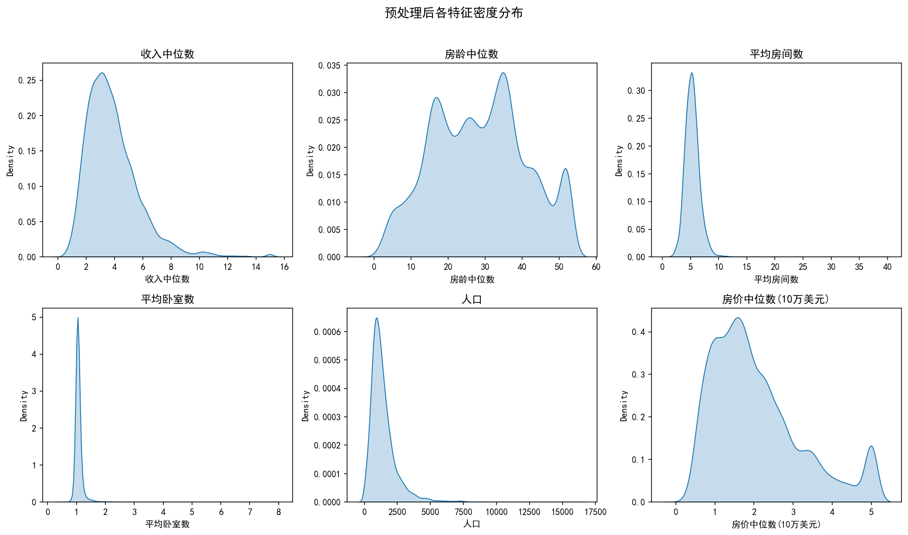
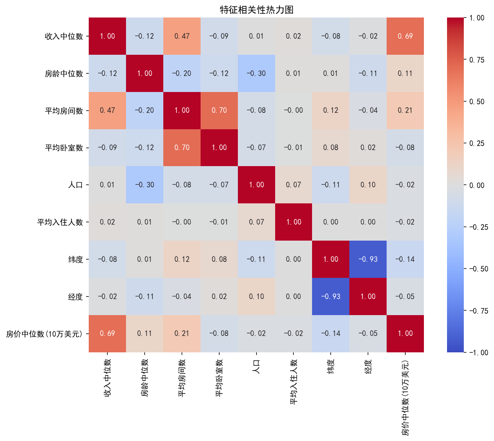
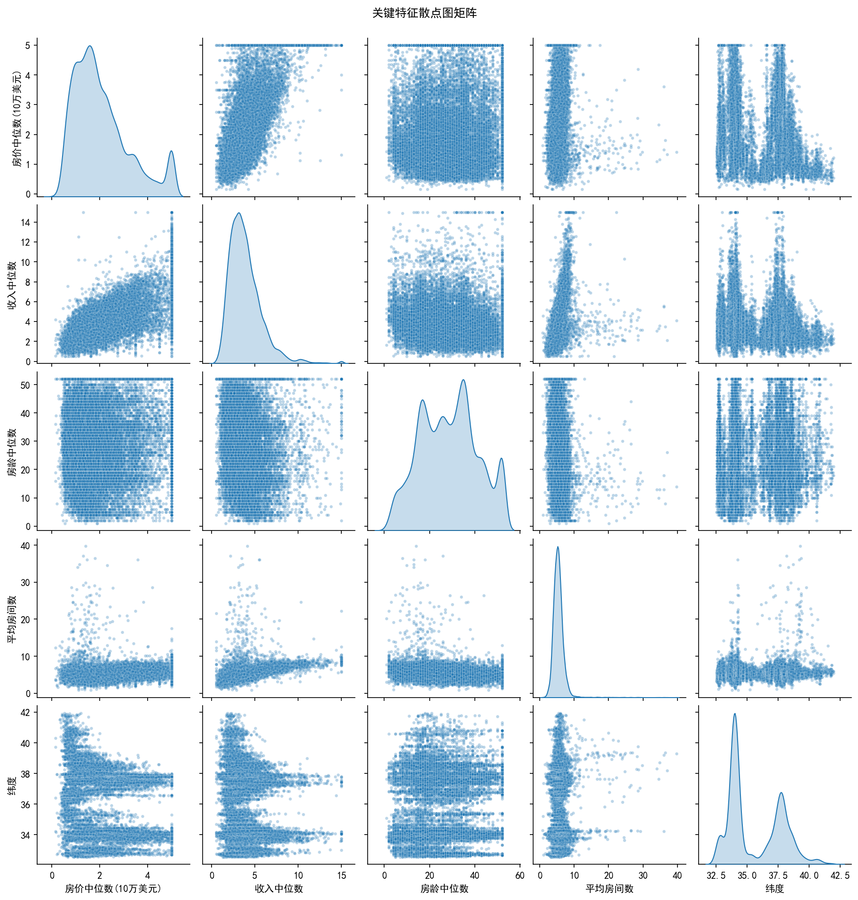

先观察原始分布，再决定如何处理
平均房间数、平均卧室数和人口存在明显长尾，说明不能直接依赖均值或固定坐标范围。

Exploratory data analysis
使用 scikit-learn California Housing 数据集练习从分布检查、异常值处理到地理可视化和相关性分析的基础流程。

项目使用 `fetch_california_housing()` 获取数据，将字段映射为中文后检查主要变量分布。为了让图表更易读，探索阶段过滤了平均房间数大于 80、平均卧室数大于 8、人口大于 20,000 的极端记录。
平均房间数、平均卧室数和人口存在明显长尾，说明不能直接依赖均值或固定坐标范围。

预处理后的图表更适合观察主体样本，但公开说明同时保留过滤阈值，避免把图形改善误解为数据质量提升。

较高房价值在旧金山湾区、洛杉矶及部分沿海区域更集中。图中同时用点大小表达人口，用颜色表达房价。
当前样本中，收入中位数与房价中位数相关系数约为 0.69；平均房间数与平均卧室数约为 0.70，提示两个特征包含重叠信息。

房价在 5 附近出现集中现象，来自数据集目标值上限。散点图也显示单一特征无法完整解释房价空间差异。
